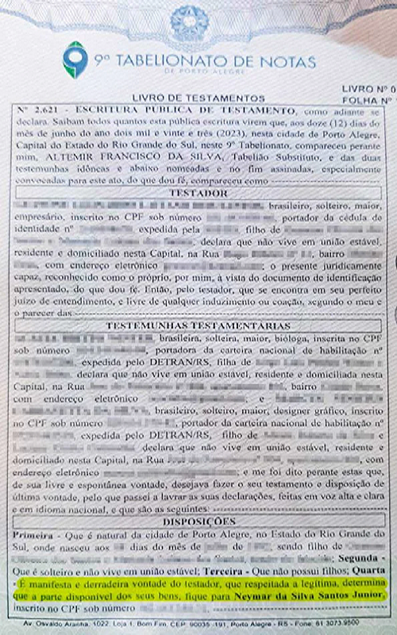

Loucura? Homem deixa todos seus bens para Neymar Jr. em testamento: "Me identifico"
Um homem deixa todos os seus bens para o jogador de futebol Neymar Jr. em testamento e se explica; confira
Sobre o assunto
Nesta segunda-feira (26), um homem de 30 anos surpreendeu ao revelar que deixou todos os seus bens conquistados em vida para o jogador Neymar Jr. O testamento, que foi levado ao cartório no dia 12 deste mês na cidade de Porto Alegre, tem validade legal e chama a atenção pelo gesto inusitado.
Em entrevista ao Metrópoles, o homem, que preferiu não ter sua identidade revelada, explicou os motivos por trás dessa decisão singular. Ele revelou que sua saúde não está em boas condições e que se identifica profundamente com o atleta. Além disso, ele enfatizou a falta de pessoas próximas a quem deixar seus bens em caso de falecimento: "Mesmo eu tendo quase 31 anos, eu não estou muito bem de saúde e, por conta disso, realmente vi que não tenho ninguém para deixar minhas coisas, caso eu venha a faltar".
Ao ser questionado sobre a escolha de deixar seus bens para o jogador que já é milionário, o homem respondeu que se identifica com Neymar Jr., já que ambos enfrentam situações de difamação. "Gosto do Neymar, me identifico muito com ele. Eu também sofro com difamação, também sou super família e a relação com o pai dele me lembra muito a que tive com o meu, que já é falecido. Mas, principalmente, sei que, acima de tudo, ele não é interesseiro, algo um pouco raro hoje em dia", declarou.
Além disso, o homem explicou que não deseja deixar suas posses para parentes com os quais não possui afinidade ou para o governo. Embora o documento não especifique quais bens serão legados ao jogador, ele afirmou: "Ia odiar deixar para o governo ou parentes com quem não me dou bem. Eu tentei entrar em contato com Neymar, mas não obtive sucesso. Também tenho alguns objetos e relíquias familiares".
